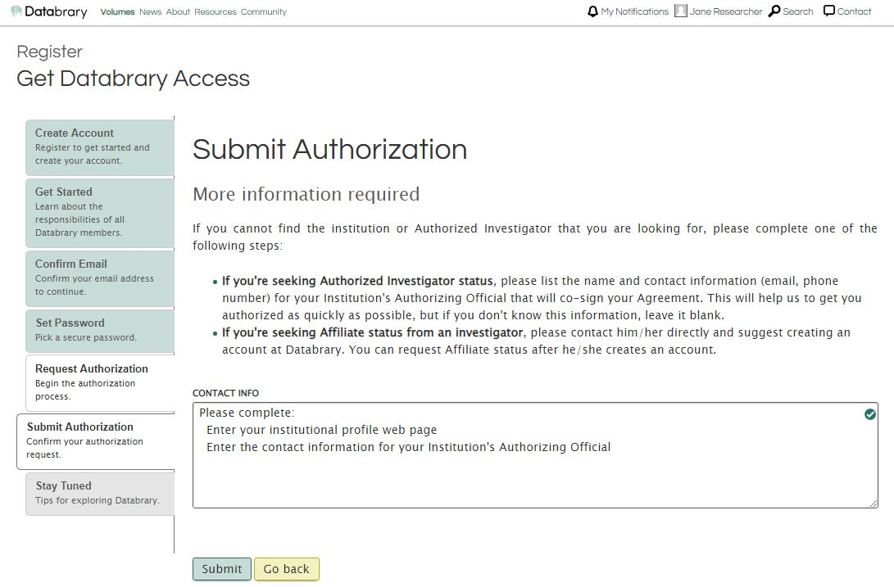

Requesting access
Since access to restricted materials on Databrary requires formal authorization from an institution, the first steps is register, create an account, and request authorization.
To start the authorization process on Databrary, please complete the Registration Form or click on the green ‘Register’ button or click on register on the top right of the menu bar at databrary.org.

Creating an account
Fill out the Create Account form with your full name, valid institutional email address, and the name of your research institution.

Read the Databrary Access Agreement, Annex I, Annex II, and Annex III and check the box to agree to the access terms.

Go to your email box, locate the auto-generated email from Databrary, and confirm your email. If you don’t receive the email within a few minutes, check your spam folder.

Need to add figure here.
Choosing a password
Next, please choose a password.
We strongly recommend using a password generation or manager program or the password manager built-in to many modern web browsers.

Keep your account credentials secret and do not share them with anyone. Each Databrary user must have their own login and password. It is violation of the Databrary Access Agreement and common sense to share login credentials with another user.
Requesting authorization
Every Databrary user who seeks access to restricted data must request and be granted authorization for that access. Authorized Investigators must secure authorization from an institution. Affiliate Investigators must secure authorization from an Authorized Investigator.
Please read the requirements for Authorized Investigator and Affiliate. Choose the radio button that accurately reflects your qualifications.

Registering as an Authorized Investigator at an Institution:
- Select the
Authorized Investigatorradio button and search for your institution.- If your institution is not found in the drop down box, please select ‘Other’ and provide more information on the next screen.
- This will auto-generate a notification to the Databrary team.
- Databrary’s authorization team will be in touch (typically within 24-48 business hours) to help you through the process and initiate a DocuSign envelope for signature.

